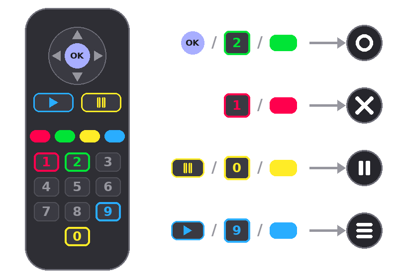

Pixl8 on Android TV
Getting your PICO-8 library onto the big screen
Pixl8 runs on Android TV and TV boxes, navigated entirely with the D-pad or remote. Your games live on the TV itself, just like on a phone. There's no file picker or download browser up there, so the first thing to do on a fresh TV is bring your library across: carts travel from your phone to the TV over your local Wi-Fi. This page walks through that transfer.
Before you start
- Pixl8 installed on both the phone and the TV.
- Both devices on the same Wi-Fi network. A guest network that isolates devices from each other will not work.
Sending your carts
On the TV
- Open Pixl8 and select "Receive carts from your phone/device". It sits at the bottom of your Library, and also in Settings.
- That screen shows the name your TV is visible as on the Wi-Fi. Leave it open. It only accepts carts while it's on screen.
On the phone
- In your Library, long-press a game, or use multi-select to grab several. Only your own library games can be sent; the built-in Featured games can't.
- Tap "Send to TV".
- The phone searches your Wi-Fi and lists the TVs waiting on their Receive screen. Pick yours (shown with a 📺 next to its name).
- The carts stream over and land in the TV's Library, ready to play. The TV shows a running count as they arrive.
Multi-cart games are sent whole. Sending one brings the
main cart plus every sub-game in its .multicarts folder, so
collections arrive complete and ready to run.
(about multi-carts)
Re-send any time. Games already on the TV (matched by name and size) are skipped, so sending again only copies what's new. The result message notes how many were already there.
Playing with the TV remote
A gamepad or a keyboard gives the best experience, but every game is playable with the plain remote too:
- D-pad: move (and browse the app)
- OK: the O button; in the app it opens whatever is selected
- Pause: the PICO-8 pause menu (save, load, quit)
- Play: the Pixl8 menu (shaders, screenshots, and more)
- Back: leave the game, or go back a screen in the app
No Play or Pause key on your remote? The number keys and the four colour keys found on many remotes work as alternatives, and the pairing is easy to remember because each number shares its colour with the matching key:

The same keys work while browsing the app: 2 or green confirm like OK, and 1 or red go back. The first time you play with the remote, Pixl8 shows this mapping on screen.
If the phone doesn't find the TV
- Check the Receive carts screen is still open on the TV. It stops advertising the moment you leave it.
- Confirm both devices are on the same Wi-Fi, not one on Wi-Fi and one on mobile data, and not a guest network that blocks device-to-device traffic.
- Some routers block this kind of local discovery. If yours does, a normal home network or a phone hotspot both devices join will get them talking.
New to Pixl8 generally? The FAQ and the other how-tos cover the phone app. Spot something that should be on this page? Open an issue on GitHub.